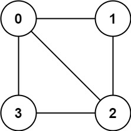
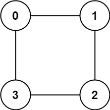

| Category | Difficulty | Likes | Dislikes |
|---|---|---|---|
| Algorithms | Medium | 9085 | 412 |
depth-first-search | breadth-first-search | union-find | graph
google | microsoft | facebook | amazon | bloomberg | samsung | uber | tiktok | linkedin | pinterest
There is an undirected graph with n nodes, where each node is numbered between 0 and n - 1. You are given a 2D array graph, where graph[u] is an array of nodes that node u is adjacent to. More formally, for each v in graph[u], there is an undirected edge between node u and node v. The graph has the following properties:
graph[u] does not contain u).graph[u] does not contain duplicate values).v is in graph[u], then u is in graph[v] (the graph is undirected).u and v such that there is no path between them.A graph is bipartite if the nodes can be partitioned into two independent sets A and B such that every edge in the graph connects a node in set A and a node in set B.
Return true if and only if it is bipartite.
Example 1:

Input: graph = [[1,2,3],[0,2],[0,1,3],[0,2]]
Output: false
Explanation: There is no way to partition the nodes into two independent sets such that every edge connects a node in one and a node in the other.Example 2:

Input: graph = [[1,3],[0,2],[1,3],[0,2]]
Output: true
Explanation: We can partition the nodes into two sets: {0, 2} and {1, 3}.
Constraints:
graph.length == n1 <= n <= 1000 <= graph[u].length < n0 <= graph[u][i] <= n - 1graph[u] does not contain u.graph[u] are unique.graph[u] contains v, then graph[v] contains u.